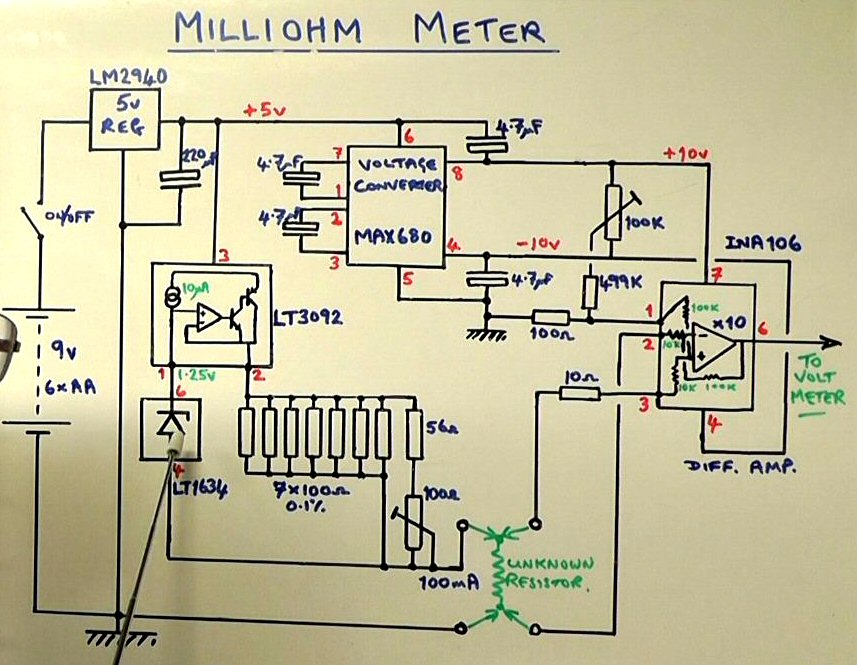
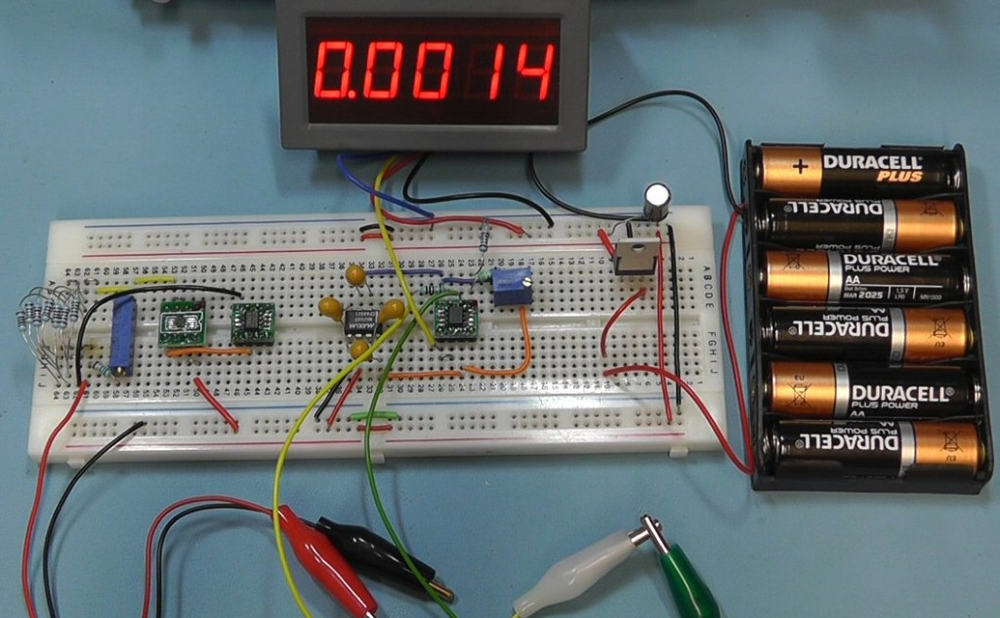
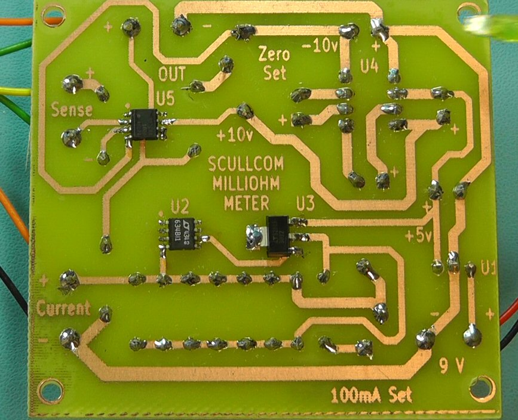
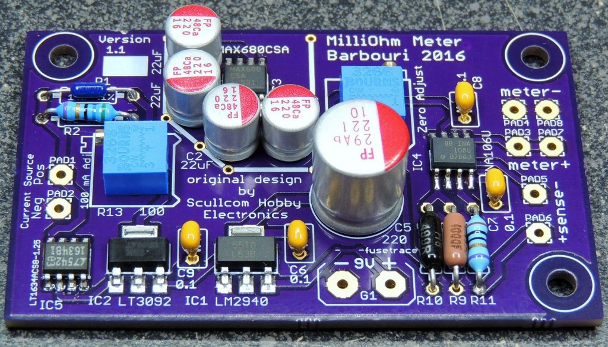
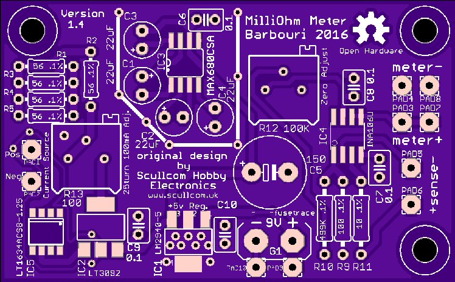
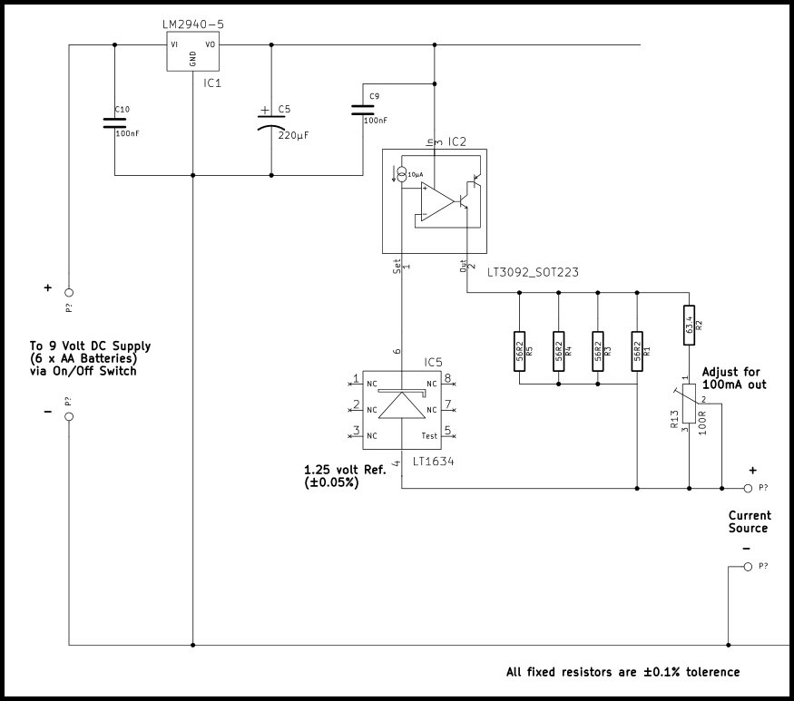
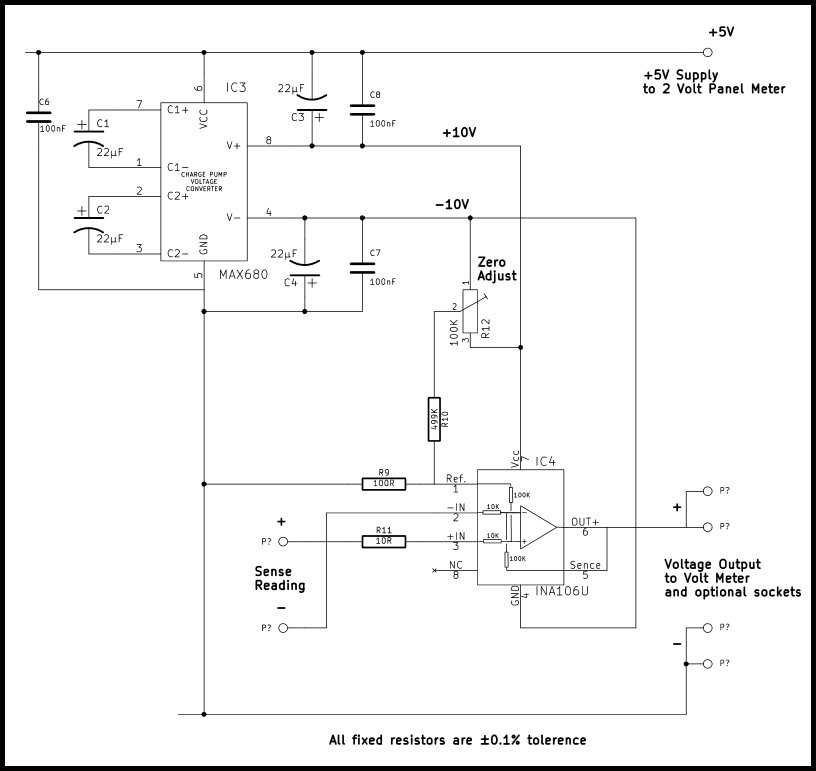
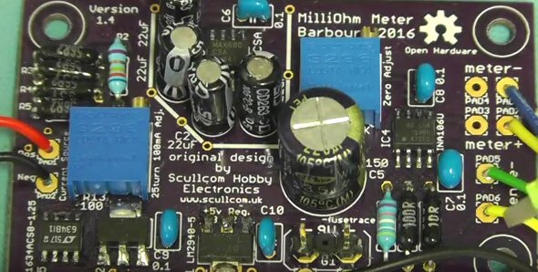
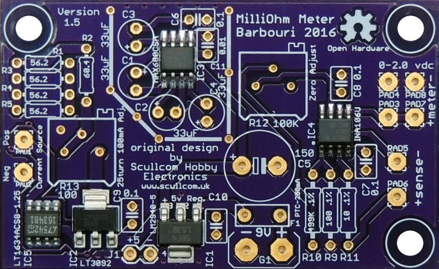

In this project we will design and build a milliohm meter which is capable of measuring low resistance from 2 ohm to 0.1 milliohm with an accuracy of 0.1% or better. The unit will be easy to build and low cost.
Below are the links to the circuit diagram and the PCB artwork and layout:
- http://www.scullcom.com/Scullcom_Milliohm_Meter_Circuit.pdf
- http://www.scullcom.com/Milliohm_PCB_Circuit.pdf

Testing the project on a breadboard

Surface mount IC’s soldered on the print side of the PCB
Parts List Below:
- 1 x LT3092 (SOT-223 case format) Programmable Current Source.
- 1 x LT1634 – 1.25v version Precision Shunt Regulator (SOIC Case format).
- 1 x INA106 – Precision Diff. Amp. (SOIC Case Format).
- MAX680 – Dual Voltage Converter (DIL format).
- LM2940 – 5 volt Low Drop Regulator (TO-220 format)
- 1 x 8 pin DIL socket.
- 1 x small push button on/off latching switch.
- 1 x 220uF 16 volt capacitor.
- 4 x 4.7uF tantalum capacitors.
- 8 x 100 ohm 0.1% resistors.
- 1 x 56 ohm 0.1% resistor.
- 1 x 10 ohm 0.1% resistor.
- 1 x 499 Kohm 0.1% resistor.
- 1 x 100 ohm 15 turn horizontal preset.
- 1 x 100K 15 turn horizontal preset.
- 6 x 4mm banana sockets
- 1 x battery holder for 6 x AA batteries.
PCB available from OSH Park
A PCB (using surface mount components) designed by one of my subscribers “pbreviceps” (Greg). Greg has taken my design and produced a very high quality PCB (double sided).
Checkout the details of this project on his website at:
http://www.barbouri.com/2016/05/27/milliohm-meter/
This is available from OSH Park (free delivery worldwide).

Link to order the PCB is below:
https://oshpark.com/shared_projects/UWvehNO2

The PCB design file is also available on this webpage to download (link below):
https://644db4de3505c40a0444-327723bce298e3ff5813fb42baeefbaa.ssl.cf1.rackcdn.com/5a5ef7b1d7e689f12a6941a2c994aa88.brd
Details of Project update (23rd September 2016)
The latest update to this project uses the PCB designed by Greg as show above. The circuit has changed slightly in terms of the resistors used to set the current source. Also the values of the capacitors for the DC to DC charge pump circuit have been increased to 22μF. Additional decoupling on the IC power pins have been added.
Below is the updated resistor network for the current source.

Below is the updated DC to DC charge pump circuit details:


SCULLCOM HOBBY ELECTRONICS – MILLIVOLT METER Mk2 PARTS LIST
PCB is available from OSH Park. A PCB (using surface mount components) designed by one of my subscribers “pbreviceps” (Greg Christenson). Greg has taken my design and produced a very high quality PCB (double sided) and made it freely available to purchase from OSH Park (3 blank PCB’s are supplied at a cost of US$19.5 plus shipping costs). Direct link: https://oshpark.com/shared_projects/UWvehNO2
1 x LM2940IMP-5.0 – SOT-223 (Farnell Order Code 1469076)
1 x LT3092EST#PBF – SOT223 (Farnell Order Code 2295469)
1 x LT1634BCS8-1.25#PBF NSOIC-8 (Farnell Order Code 1273451)
1 x MAX680CSA+ NSOIC-8 (Farnell Order Code 9725717)
1 x INA106U – SOIC (Farnell Order Code 1212395)
4 x 56.2 Ω 250 mW, ± 0.1% ±15ppm/°C (Farnell Order Code 9503277 or 1751304)
1 x 63.4 Ω 250 mW, ± 0.1% ±15ppm/°C (Farnell Order Code 1083123)
1 x 10 Ω 250 mW, ± 0.1% ±15ppm/°C (Farnell Order Code 1083036)
1 x 100 Ω 250 mW, ± 0.1% ±15ppm/°C (Farnell Order Code 9499865 or 1083143)
1 x 499 KΩ 250 mW, ± 0.1% ±15ppm/°C (Farnell Order Code 1083547)
1 x 220 μF 35v electrolytic (Farnell Order Code 1144628) or similar
4 x 22 μF 25v electrolytic (Farnell Order Code 2079085) or similar
5 x 0.1 μF ceramic (Farnell Order Code 2529480) or similar
1 x 100 Ω preset (BOURNS 3296P-1-101LF TRIMMER, 25 TURN 100R (Farnell Order Code 9353020)
1 x 100 KΩ preset (BOURNS 3296P-1-104LF TRIMMER, POT, 100K, 10%, 25TURN, (Farnell Order Code 9353054)
1 x 4 ½ Digit High Precision +/- 2V 0-1.9999V Red LED Digital Panel Meter.
From seller yourcartmax on eBay. Direct link below:
http://www.ebay.co.uk/itm/261284812938?_trksid=p2057872.m2749.l2649ssPageName=STRK%3AMEBIDX%3AIT
or alternative from eBay seller coldfusionx, direct link: http://www.ebay.com/itm/350261421976
1 x Black textured ABS enclosure with sloping panel. 150mm length, 95mm width, height slopes from 33.2 to 49.5mm. From www.rapidonline.com (Order Code: 30-3606). Direct link below:
https://www.rapidonline.com/rapid-g1168b-150x95x50-black-case-30-3606
1 x PP3 9V Battery Holder Clip Connector. From seller utronix_ltd on eBay.
http://www.ebay.co.uk/itm/PP3-9V-BATTERY-HOLDER-CLIP-CONNECTOR-IDEAL-FOR-GUITAR-EFFECTS-PEDAL-/262341198335?hash=item3d14c101ff:g:DVkAAOSw-itXsZc-
High quality Alligator Kelvin Test gold plated clip 2 Colors Red + Black. From seller louisliu2009 on eBay. Direct link below:
http://www.ebay.co.uk/itm/4pcs-High-quality-Alligator-Kelvin-Test-gold-plated-clip-2-Colors-Red-Black-/180779978390?hash=item2a17538e96:g:SlgAAMXQ-3NRnBmn
2 x 4mm Insulated Test Socket Red (Rapid order code 17-2677) or similar
2 x 4mm Insulated Test Socket Black (Rapid order code 17-2674) or similar
1 x 4mm Insulated Test Socket Yellow (Rapid order code 17-2679) or similar
1 x 4mm Insulated Test Socket Green (Rapid order code 17-2676) or similar
The 4mm sockets available from Rapid, direct link below: or similar
https://www.rapidonline.com/4mm-insulated-test-socket-83057
1 x On/Off switch either toggle or push button
1 x 2.1mm pin diameter DC power socket (Rapid order code 50-3276) or similar
https://www.rapidonline.com/cliff-electronic-fc681445-dc-socket-5-5-x-2-1mm-model-scd-026-50-3276
Greg has now design a new version (Version 1.5) of the PCB which now has 5 volt supply connections for the panel meter. This version of the PCB is available from:
https://oshpark.com/shared_projects/oxbxvp22

Check out the link below on Greg’s website which show details of his take on this project:
http://www.barbouri.com/2016/10/09/milliohm-meter-version-1-5/
Below information about the IC’s used in this project
The LT3092EST#PBF is a programmable 2-terminal Current Source. It requires only two resistors to set an output current between 0.5 and 200mA. It is stable without input and output capacitors, offering high DC and AC impedance. The SET pin features 1% initial accuracy and low temperature coefficient. Current regulation is better than 10ppm/V from 1.5 to 40V.
The LT1634 series micropower precision shunt Voltage Reference for use with calibrators. The band-gap reference uses trimmed precision thin film resistors to achieve 0.05% initial voltage accuracy. Improved curvature correction technique guarantees 10ppm/°C maximum temperature drift. Advances in design guarantee 10µA operation and low temperature cycling hysteresis. The LT1634 does not require an output compensation capacitor, but is stable with capacitive loads. Low dynamic impedance makes the LT1634 reference easy to use from unregulated supplies.
The INA106U is a precision fixed-gain Differential Amplifier consisting of a precision op amp and on-chip metal film resistors. The resistors are laser trimmed for accurate gain and high common-mode rejection. Excellent TCR tracking of the resistors maintains gain accuracy and common-mode rejection over temperature. It has a gain typical error of ±0.01%, and a typical non-linearity error of 0.0002%.
The LM2940IMP-5.0/NOPB is a positive Voltage Regulator features the ability to source 1A of output current with a dropout voltage of typically 0.5V and a maximum of 1V over the entire temperature range. It has built-in Internal Short Circuit Current Limit and Reverse Battery Protection. Furthermore, a quiescent current reduction circuit has been included which reduces the ground current when the differential between the input voltage and the output voltage exceeds approximately 3V. The quiescent current with 1A of output current and an input-output differential of 5V is therefore only 30mA. Higher quiescent currents only exist when the regulator is in the dropout mode (VIN-VOUT <=3V).
Hi Louis,
This project gets better and better. Good work!
I have a possible alternative for the precision resistors.
Both the Welwyn RC55Y series (at 2.56 Euro’s a piece) and the Holsworthy H856 series (at 1.72 Euro’s each) are pretty expensive. Greg ordered a high number of 0.25 cent 1% 50PPM/K resistors (100 for the 56R2 and 20 of the 63R4) resistors and did his own matching to get near the precision of 0,1% and 15PPM/C. However, Mouser has the NEOHM YR1B series with the required precision (0.1%) and a TC of 15 PPM/C for only 0.25 Euro’s in single quantities for all the required resistors (63R4, 56R2, 100R, 499K and 10R). Digikey has them too, but only in minimum quantities of 1,000 pieces. There are only 8 resistors required, but when you’re on a tight budget and can get them all for the price of one…
Hello Louis,
I looked through the whole project and i did not see a complete schematic diagram.
I would like to look and study the schematic before, then i will order the PCB and parts.
I want ot understand how it works.
I am a visual person and looking at at schematic is better than reading.
By the way, who drive your LCD display.
I did not see any microprocessor on your drawings.
Please reply to my email because i might miss your reply here.
Thank you
Ion.
Is the parts list labeled wrong from the pcb board?? I see this in several locations.
Hi, I like your website and the youtube channel very much and already built some stuff (i.e. current box, milliohm meter). All working very good. I ordered 3 MilliOhmMeter PCB‘s from OshPark v1.5. If someone is interested, 2 are left over. I‘m from germany, so delivery within germany would be preferred (or europe) not overseas, too expensive I think. 7€ plus shipping.
I can’t figure out what is wrong but I get an error. -0.002 and some times -0.001 when the leads are shorted.
Any help pls
Apply a small voltage i.e. from a 1.5V battery to the input of the panel-meter. Desolder the input wires from the PCB frst! Do you get a reading of about 1.5? If so, the panel-meter is ok. Solder the wires back to the PCB. Apply a small voltage (less than 200mv = 0,2V, use a 1:10 divider with the 1.5V battery) to the sense input of the pcb. Do you get a reading on the panel-meter? If not, inspect the sense part. Are the supply voltages for the INA present? +/-10V as generated by the MAX680? With shorted sense input you should be able to adjust the reading to zero, using the 100k trimmer. If you have been able to adjust the source part to 100mA, this part should be ok. To be sure, measure the voltage from pin 6 to pin 4 of the LT1634. You should get 1.25V with very litte deviation. Hope this helps.
Hint, to measure the 1.25V of the LT1634 the source output has to be shorted or a small (less than 2Ohm) resistor connected! I had a fault too. I used three 4.7Ohm 0,1% resistors in series instead of 4 56Ohm in parallel. but it didn’t work. Until I realized, that I have been sent 4.7k resistors, labeled as 4.7Ohm. Took me some time. So carefully check the resistors too.
I get 0.001 always no mater what resistance is sensed. I have adjusted the current to 100mA. Already spend on populating two pcb.
Any help pls.
Hi has anyone got the fascia design for the constant current source box they could share with me?
Thanks
Mark.